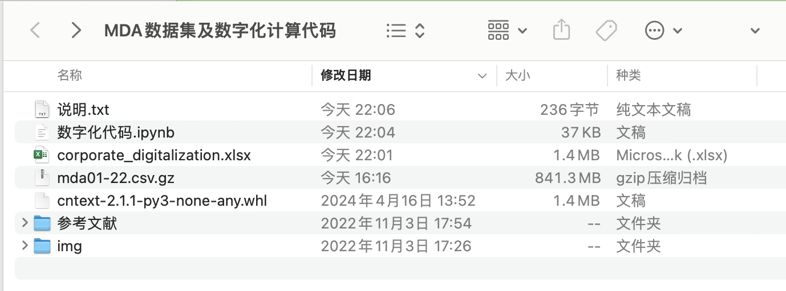

使用 经营讨论与分析 数据，计算企业数字化指标, 相关论文:
- 吴非, 胡慧芷, 林慧妍, and 任晓怡. “企业数字化转型与资本市场表现——来自股票流动性的经验证据.” 管理世界 (2021).
- 宋德勇, 朱文博, and 丁海. “企业数字化能否促进绿色技术创新?.” 财经研究 48, no. 4 (2022).
数字化指标数分析结果以xlsx存储，如下图
一、读取数据
完整md&a.xlsx数据集370M，覆盖33000+条 md&a记录。

测试数据 small_test_data.xlsx 是从完整的数据中随机抽取的20条，结构基本一致。以测试数据为例，方便快速实验。
import pandas as pd
# converters 强制声明该列为字符串， 防止股票代码 被程序识别为数字，
df = pd.read_excel('small_mda_data.xlsx', converters={'股票代码': str})
#显示前5行
df.head()
二、构建词典
下图是吴非等(2021)数字化指标的截图

后期，如果想自己扩展词典，可以初步筛选种子词(该篇论文的词表), 使用md&a语料文件(txt格式)， 结合cntext库的so-pmi或词向量方法，对数字化词典进行扩充。
这里我已将吴非等(2021)的词表内置到 cntext库（1.8.0版本）的 Chinese_Digitalization.pkl中。
#安装cntext库
import cntext as ct
Chinese_Digitalization_Info = ct.load_pkl_dict('Chinese_Digitalization.pkl')
print(ct.__version__)
print(Chinese_Digitalization_Info)
Run
1.8.0
{'Referer': '吴非,胡慧芷,林慧妍,任晓怡. 企业数字化转型与资本市场表现——来自股票流动性的经验证据[J]. 管理世界,2021,37(07):130-144+10.',
'Desc': '基于这篇论文，构建了中文数字化词典，含人工智能技术、大数据技术、云计算技术、区块链技术、数字技术应用等关键词列表。 ',
'Chinese_Digitalization':
{'Artificial_Intelligence': ['人工智能', '商业智能', '图像理解', '投资决策辅助系统', '智能数据分析, '智能机器人', '机器学习', '深度学习', '语义搜索', '生物识别技术', '人脸识别', '语音识别', '身份验证', '自动驾驶', '自然语言处理'],
'Big_Data': ['大数据', '数据挖掘', '文本挖掘', '数据可视化', '异构数据', '征信', '增强现实', '混合现实', '虚拟现实'],
'Cloud_Computing': ['云计算', '流计算', '图计算', '内存计算', '多方安全计算', '类脑计算', '绿色计算', '认知计算', '融合架构', '亿级并发', 'EB级存储', '物联网', '信息物理系统'],
'Block_Chains': ['区块链', '数字货币', '分布式计算', '差分隐私技术', '智能金融合约'],
'Usage_of_Digitalization': ['移动互联网', '工业互联网', '移动互联', '互联网医疗', '电子商务', '移动支付', '第三方支付', 'NFC支付', '智能能源', 'B2B', 'B2C', 'C2B', 'C2C', 'O2O', '网联', '智能穿戴', '智慧农业', '智能交通', '智能医疗', '智能客服', '智能家居', '智能投顾', '智能文旅', '智能环保', '智能电网', '智能营销', '数字营销', '无人零售', '互联网金融', '数字金融', 'Fintech', '金融科技', '量化金融', '开放银行']}}
三、定义数字化函数
目前，对于企业数字化水平的度量是相关研究的难点，现有文献主要有三种度量方法。
- 第一，祁怀锦等（2020）使用企业年末无形资产明细项中与数字经济相关部分的金额占无形资产总额的比例度量企业数字化程度。
- 第二，大量研究运用数字化相关关键词在年报中的词频数量或占比度量企业的数字化转型或数字化水平（赵宸宇，2021；袁淳等，2021）。
- 第三，相关研究采取问卷调查的方式获取企业的数字化水平数据（刘政等，2020）。
使用第二种方法，通过Python定义数字化函数，统计文本中数字化词语个数得到相应指标。
吴非等(2021管理世界)数字化指标的计算更复杂一些，在此基础上，剔除关键词前存在“没” “无” “不”等否定词语的表述，同时也剔除非本公司（包括公司的股东、客户、供应商、公司高管简介介绍在内）的“数 字化转型”关键词。
import cntext as ct
digtal_diction = ct.load_pkl_dict('Chinese_Digitalization.pkl')['Chinese_Digitalization']
def digtal_function(text):
#统计text中每类词的个数
res = ct.sentiment(text=text, diction=digtal_diction)
return pd.Series(res)
test_text = '经过技术人员不懈努力， 该企业在人工智能、大数据、云计算、工业互联网等领域有了一定的市场地位....'
digtal_function(text=test_text)
Run
Artificial_Intelligence_num 1
Big_Data_num 1
Cloud_Computing_num 1
Block_Chains_num 0
Usage_of_Digitalization_num 1
stopword_num 11
word_num 24
sentence_num 1
dtype: int64
四、批量计算
使用apply方法，对 [经营讨论与分析内容] 列，进行 digtal_function 运算, 得到 res_df
#结果返回为dataframe，数字代表的是每类词出现次数
res_df = df['经营讨论与分析内容'].apply(digtal_function)
res_df.head()
Run
参数解读
- Artificial_Intelligence_num 人工智能技术词出现在md&a中的次数
- Big_Data_num 大数据技术词出现在md&a中的次数
- Cloud_Computing_num 云计算技术词出现在md&a中的次数
- Block_Chains_num 区块链技术词出现在md&a中的次数
- Usage_of_Digitalization_num 数字化应用技术词出现在md&a中的次数
- stopword_num 停用词出现在md&a中的次数
- word_num md&a中的总词数(md&a的长度)
- sentence_num md&a的句子数
五、结果整理
上一环节，将各种技术词出现次数加总，构建企业数字化词语出现个数， 并将其转为数字化指标(词频)。
由于这类数据具有典型的“右偏性”特征，后续在其他计量分析软件中需要将其进行对数化处理，从而得到刻画企业数字化转型的整体指标。
res_df['Digital_word_num'] = res_df[['Artificial_Intelligence_num', 'Big_Data_num', 'Cloud_Computing_num', 'Block_Chains_num', 'Usage_of_Digitalization_num']].sum(axis=1)
# [数字化相关技术词] 在 [文本总词数] 中的占比
res_df['Digital_Index'] = res_df['Digital_word_num']/res_df['word_num']
res_df.head()
Run
六、保存结果
合并df 和 res_df
df2 = pd.concat([df, res_df], axis=1)
df2.head()
Run
选中需要的字段，保存到 corporate_digitalization.xlsx 内
df[['股票代码', '公司简称', '会计年度', 'Digital_Index']].to_excel('corporate_digitalization.xlsx', index=False)